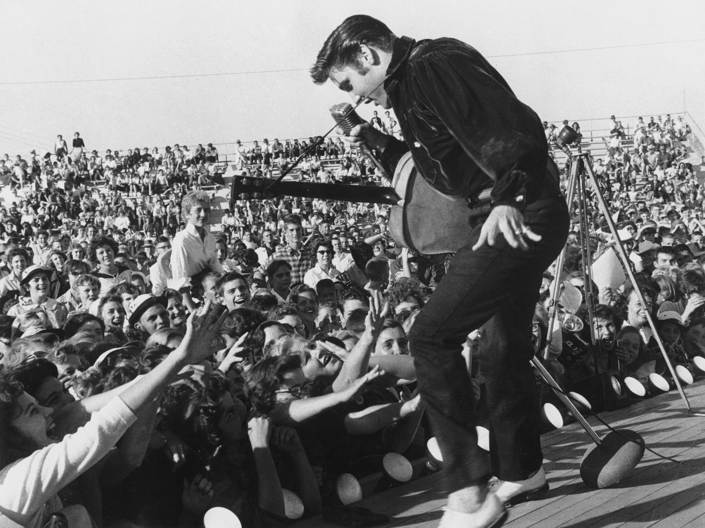

Elvis Presley
O Rei do Rock

Elvis Presley em 1956
Linha do tempo da vida de Elvis Presley:
- 1935 - Elvis Aaron Presley nasceu em 8 de janeiro de 1935, na localidade de East Tupelo, no estado do Mississippi, Estados Unidos da América.
- 1953 - Conhece o produtor Sam Phillips.
- 1954 – Grava “That’s All Right”, na Sun Records em Memphis, marcando seu primeiro sucesso.
- 1956 – Faz sua estreia na televisão no programa "Stage Show".
- 1956 – Alcança seu primeiro single número 1 com "Heartbreak Hotel".
- 1956 – Faz uma aparição no programa "The Ed Sullivan Show".
- 1956 – Faz sua estreia no cinema em “Love Me Tender”.
- 1957 – Compra Graceland pelo valor de $102.500.
- 1960 – Participa de “Flaming Star”, seu único papel em um filme não musical.
- 1968 – Vence um Grammy por “How Great Thou Art” no gênero gospel de Melhor Performance Sagrada.
- 1968 – O especial de televisão chamado “Elvis” (mais tarde chamado de “The ’68 Comeback Special”) vai ao ar.
- 1970 – Encontra-se com Richard Nixon (presidente dos Estados Unidos da América na época), na Casa Branca.
- 1971 – É premiado com o Grammy Lifetime Achievement Award.
- 1972 – Alcança seu último hit no Top 10 dos EUA com "Burning Love".
- 1973 – Vence um Grammy por “He Touched Me” no gênero gospel de Melhor Performance Inspiradora.
- 1973 – Seu especial, “Elvis: Aloha from Hawaii – Via Satellite”, é assistido em 40 países por aproximadamente um bilhão de pessoas.
- 1975 – Vence um Grammy por “How Great Thou Art” no gênero gospel de Melhor Performance Inspiradora (Não Clássica).
- 1977 – Realiza seu último show, no Market Square Arena, em Indianápolis.
- 1977 – Morre aos 42 anos.